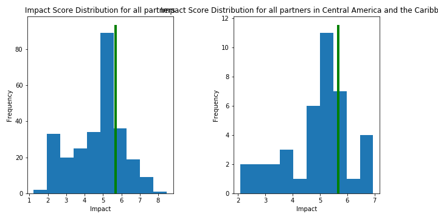
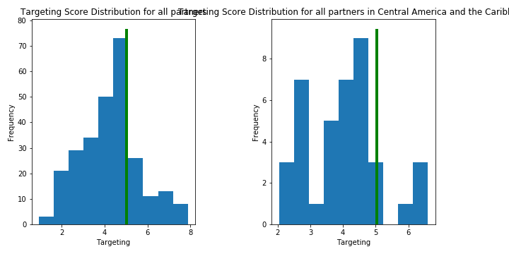
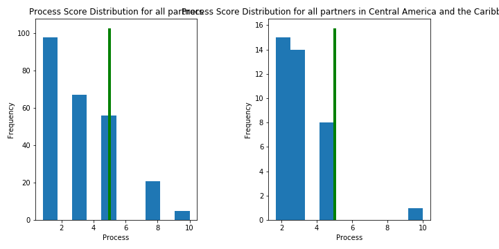
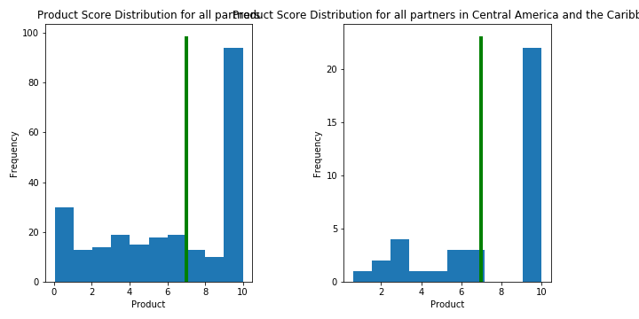

| Component Score | Median (All) | Percentile (vs. All) | Median (LAC) | Percentile (vs. LAC) | |
|---|---|---|---|---|---|
| Component | |||||
| Impact | 5.67 | 5.05 | 71.2% | 5.05 | 75.8% |
| Targeting | 5.02 | 4.12 | 69.4% | 4.12 | 87.9% |
| Product | 7.00 | 10.00 | 60.8% | 10.00 | 58.1% |
| Process | 5.00 | 3.33 | 72.8% | 3.33 | 87.5% |

The Impact Score is built on three subcomponent scores:
| Component Score | Median (All) | Percentile (vs. All) | Median (LAC) | Percentile (vs. LAC) | |
|---|---|---|---|---|---|
| Component | |||||
| Targeting | 5.02 | 4.36 | 69.4% | 4.12 | 87.9% |
| MPI | 2.81 | 1.77 | 53.1% | 1.77 | 75.8% |
| Findex | 5.26 | 5.26 | 52.4% | 5.26 | 62.1% |
| Outreach | 7.00 | 5.00 | 63.6% | 5.00 | 74.1% |

The Targeting Score measures how underserved the borrowers of the partner are, based on three components.
| Component Score | Median (All) | Percentile (vs. All) | Median (LAC) | Percentile (vs. LAC) | |
|---|---|---|---|---|---|
| Component | |||||
| Process | 5.0 | 3.33 | 72.8% | 3.33 | 87.5% |

The Process Score evaluates how client-centric a partner's operations are, including the level of nuance in their M&E systems, the appropriateness of their MIS system, and subjective assessments of price fairness and transparency.
| Component Score | Median (All) | Percentile (vs. All) | Median (LAC) | Percentile (vs. LAC) | |
|---|---|---|---|---|---|
| Component | |||||
| Product | 7.0 | 6.90 | 60.8% | 10.00 | 58.1% |
| Research | 7.0 | 10.00 | 64.0% | 10.00 | 58.1% |
| Sector | 0.0 | 0.34 | 24.0% | 0.34 | 19.4% |

The Product Score measures how valuable we expect a partner's financial services to be to borrowers, given the evidence in our sector research page.